States & Union Territories of India
Click any tile to view quick facts: capital, ruling govt, famous food, dance, languages and major festivals.
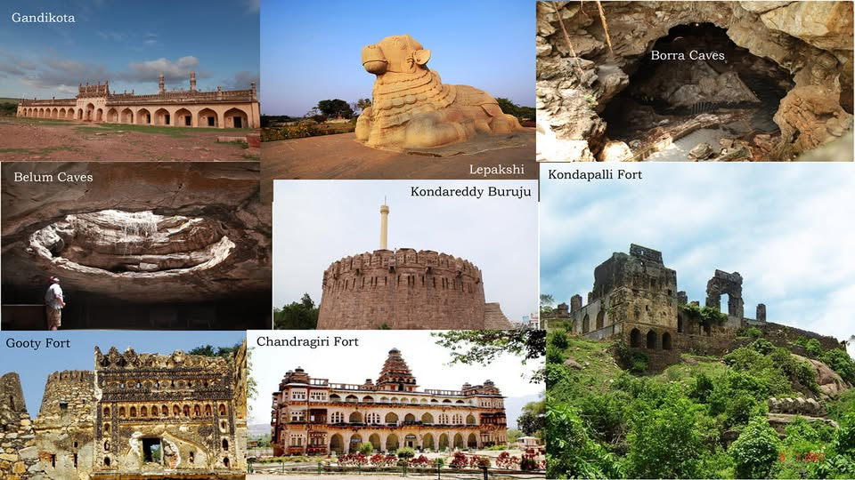
Andhra Pradesh
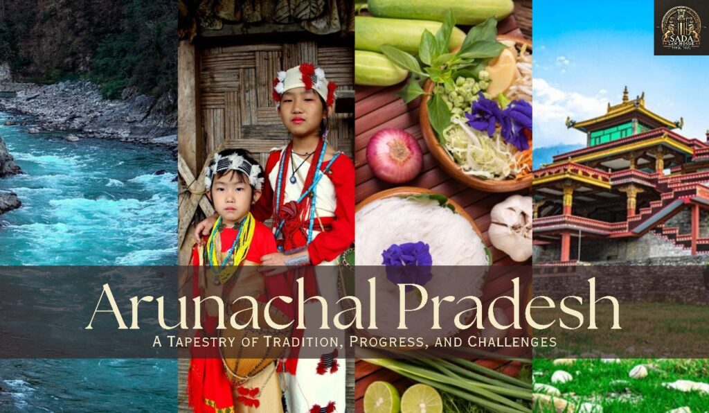
Arunachal Pradesh
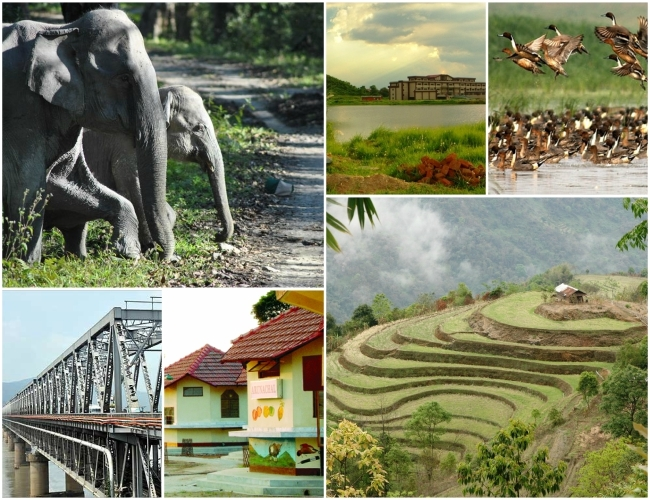
Assam
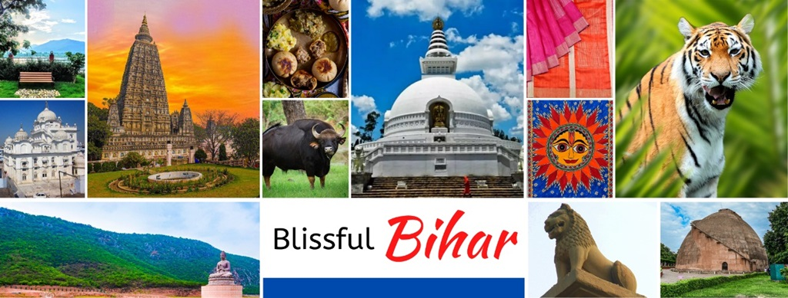
Bihar

Chhattisgarh
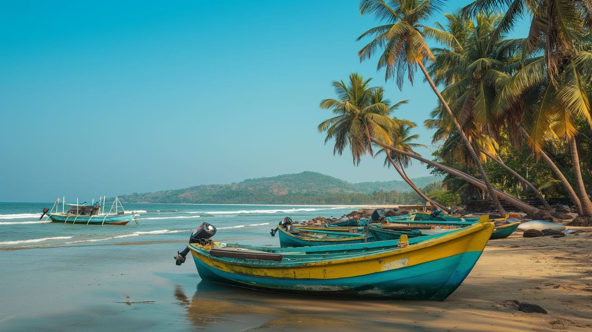
Goa

Gujarat
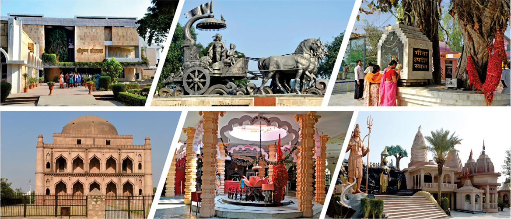
Haryana
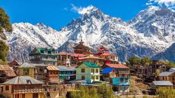
Himachal Pradesh
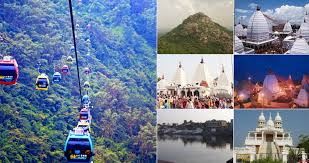
Jharkhand
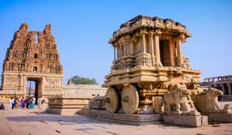
Karnataka
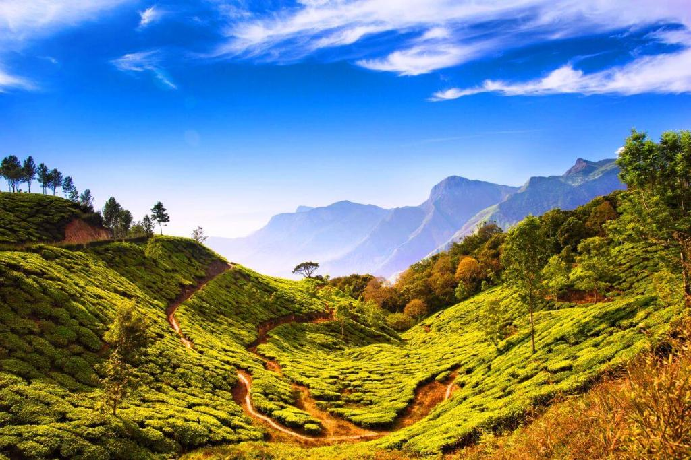
Kerala
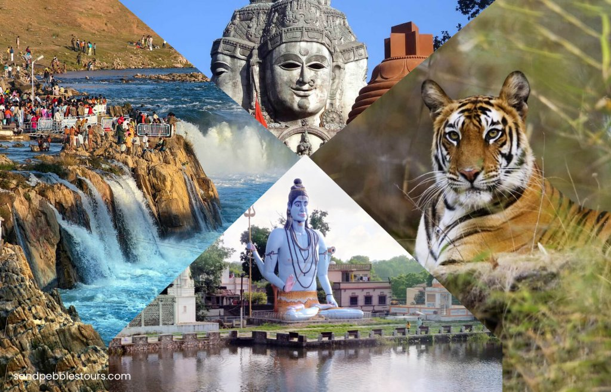
Madhya Pradesh

Maharashtra

Manipur

Meghalaya
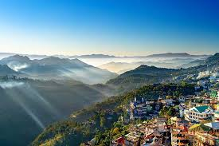
Mizoram

Nagaland
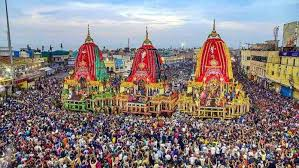
Odisha
Punjab
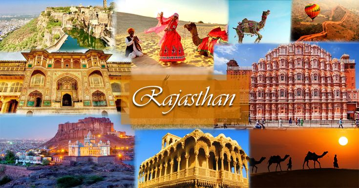
Rajasthan
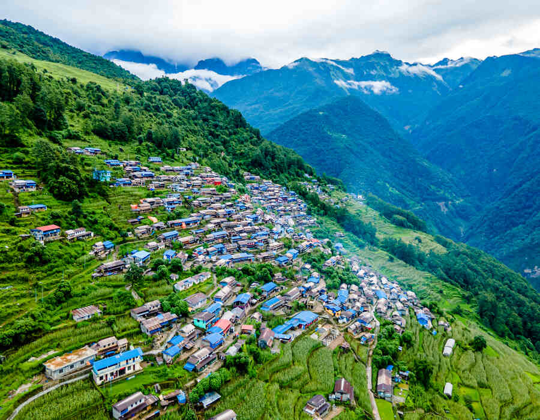
Sikkim
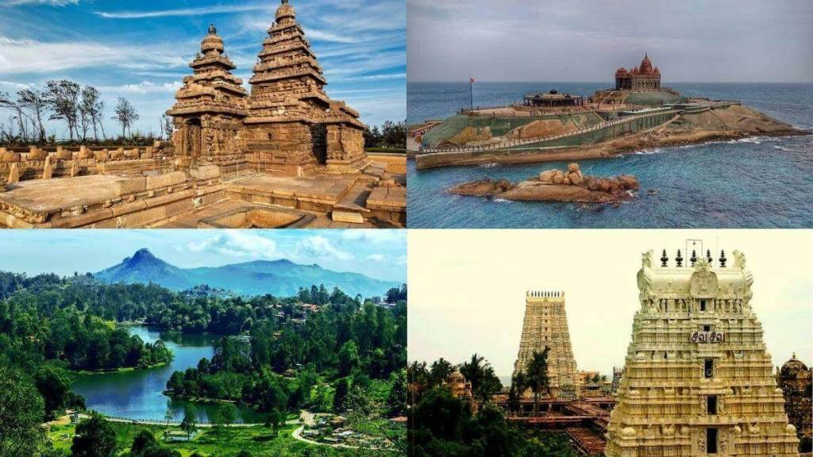
Tamil Nadu

Telangana

Tripura
Uttar Pradesh
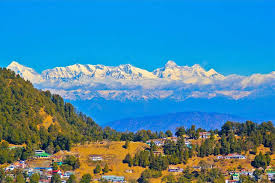
Uttarakhand

West Bengal
Andaman & Nicobar
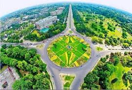
Chandigarh
D&NH & D&D

Delhi (NCT)
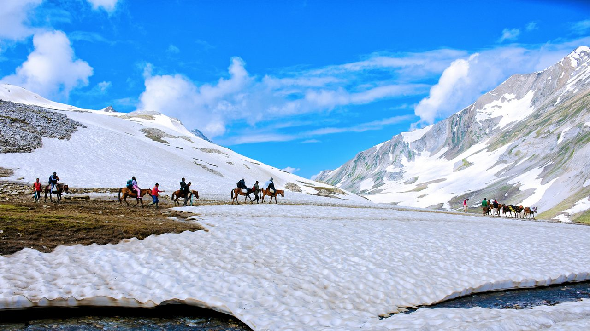
Jammu & Kashmir
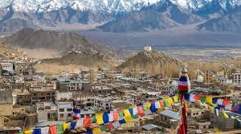
Ladakh
Lakshadweep